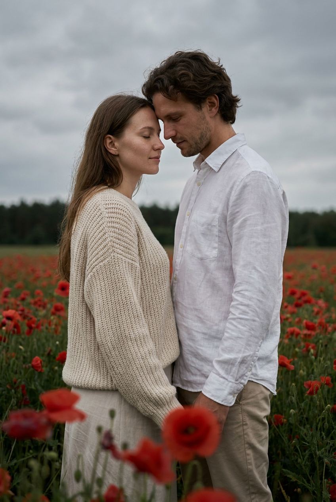
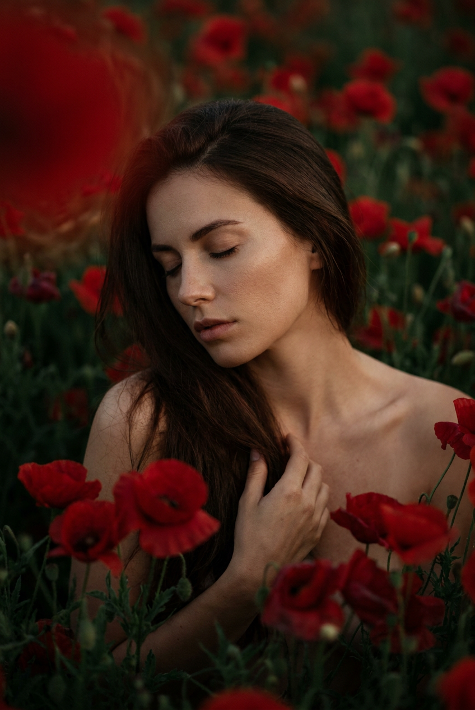
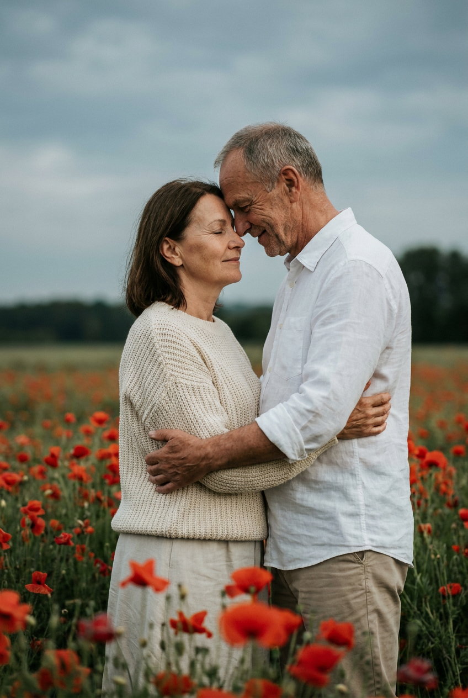
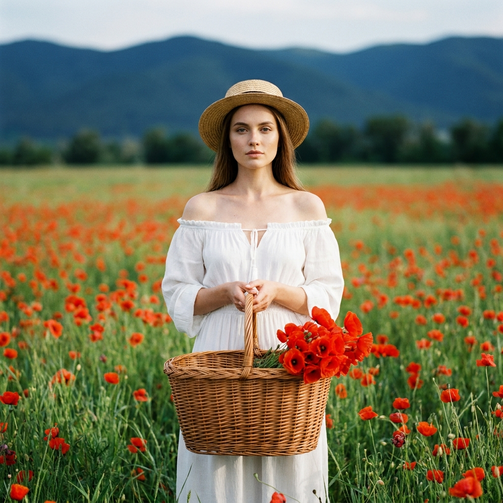
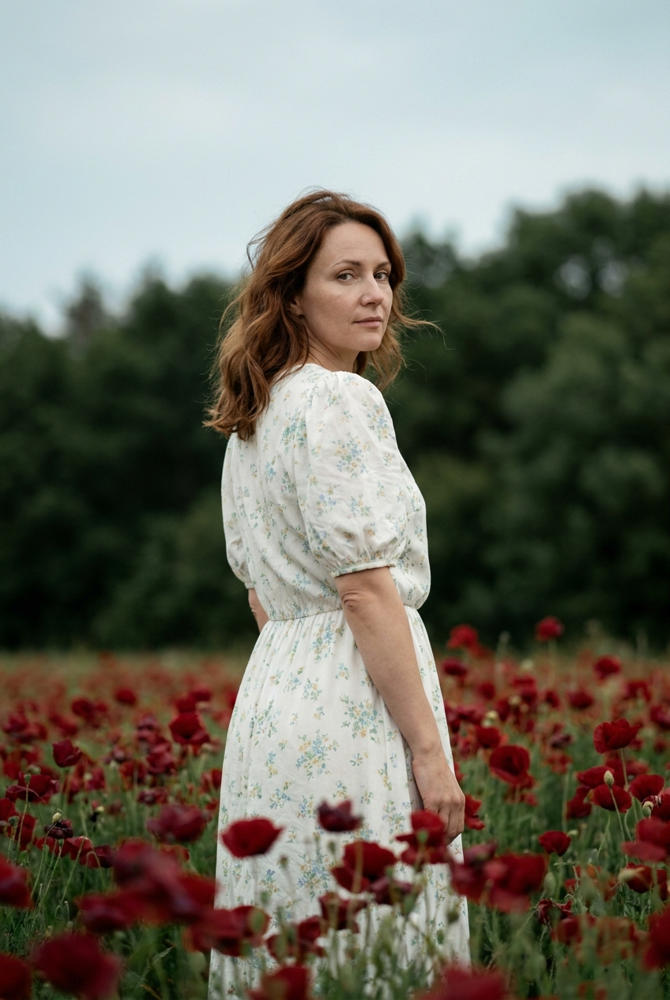
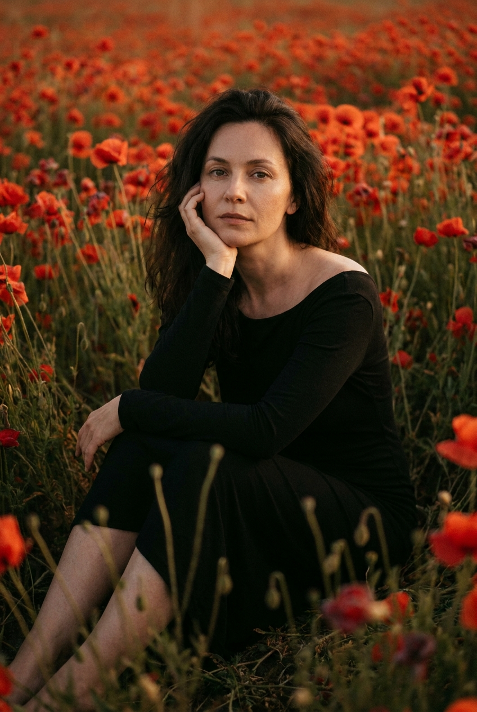
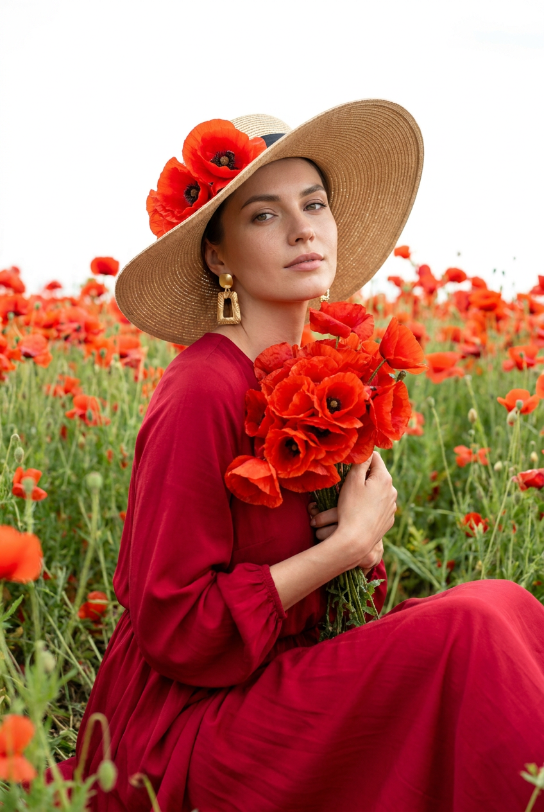
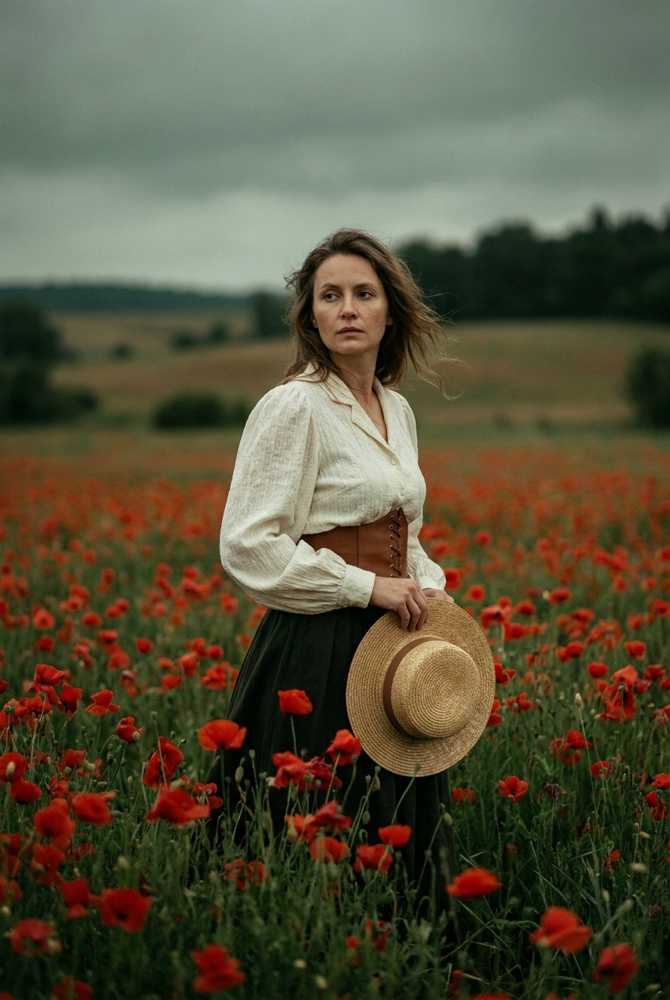
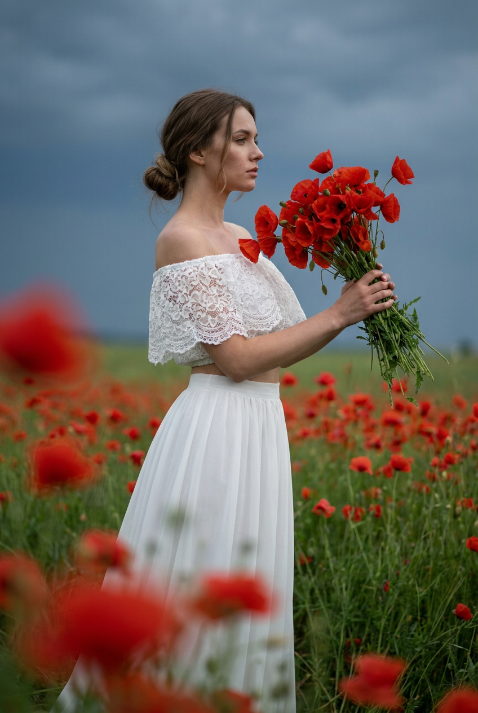
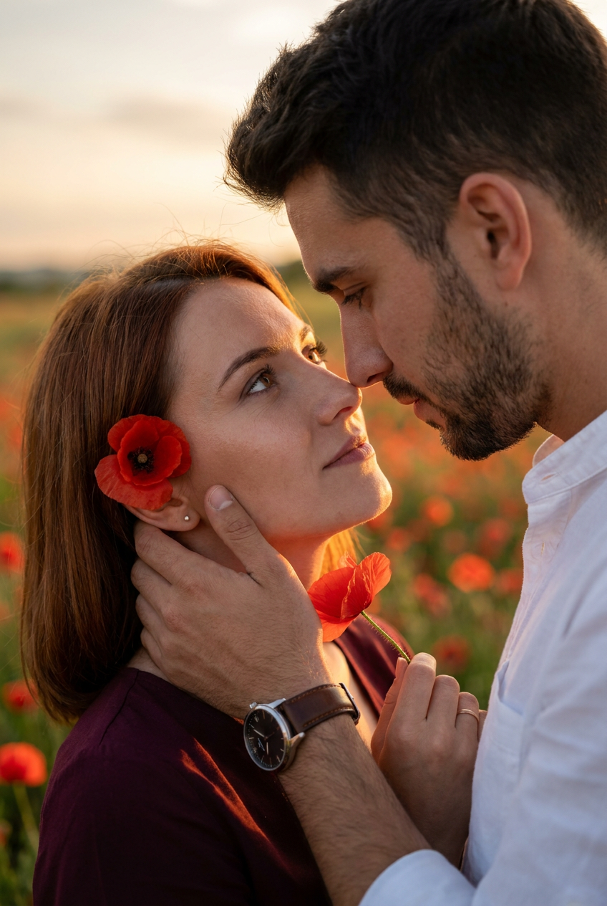

ИИ-фото с маками: 10 промптов для нейросети

Красивое фото в маковом поле сложно снять случайно: нужны подходящий сезон, мягкий свет, удачная поза и фон без лишних деталей. Генерация помогает собрать такую сцену за несколько попыток и сохранить нужное настроение даже без поездки за город.
В подборке — 10 сценариев для вертикальных ИИ-фото: от портрета среди цветов до близкого романтичного кадра пары. В промптах уже описаны композиция, свет, палитра, окружение, позы и работа с референсом лица.
Как сгенерировать такое фото: пошагово
Нужен снимок анфас при ровном свете, лицо в кадре целиком, без тёмных очков и головных уборов. Разрешение от 1000 пикселей по короткой стороне. Чем чётче исходник, тем точнее модель повторит черты.
Выберите сценарий ниже и нажмите «Копировать» — текст уйдёт в буфер целиком, вместе с командой сохранения внешности. Эта команда стоит первой строкой и отвечает за то, чтобы на выходе было ваше лицо, а не случайное.
Кнопка «Сгенерировать» рядом с каждым промптом открывает модель в новой вкладке. Nano Banana Pro работает с референсом лица — в отличие от моделей, которые генерируют портрет с нуля и узнаваемость теряют.
Промпт — в поле ввода, портрет — через загрузку референса. Порядок значения не имеет, но без референса команда сохранения внешности работать не будет: модели нечего сохранять.
Для сторис и ленты берите 9:16, для превью и обложек — 4:3. Первый результат редко идеален: если поза или свет ушли не туда, поправьте соответствующую часть промпта и запустите заново. Обычно хватает двух-трёх итераций.
10 промптов для генерации
1. Пара среди красных маков
Строго сохранить внешность по загруженному референсу: черты лица, пропорции, мимику и текстуру кожи без изменений. Фотореалистичная вертикальная фотография взрослой пары в открытом поле красных маков. Композиция, позы, освещение, цветопередача и эмоциональный тон должны быть максимально близки к референсу. Съёмка проходит в пасмурный день при мягком рассеянном естественном свете, без жёстких теней. На переднем и среднем плане — ярко-красные цветы маков, между ними видна тёмно-зелёная трава. Дальний план мягко размыть; на горизонте оставить тёмную полосу деревьев и серо-голубое небо. Сохранить узнаваемость обоих персонажей: индивидуальную форму глаз, носа, губ, скул и подбородка, линию роста волос, оттенок кожи, возрастные особенности и естественную мимику. Кожа живая, с натуральной текстурой, без пластиковой ретуши, искажений лица и чрезмерной идеализации. Вертикальный формат 4:5, реалистичная оптика, малая глубина резкости.
2. Портрет в цветочном море

Строго сохранить внешность по загруженному референсу: черты лица, пропорции, мимику и текстуру кожи без изменений. Вертикальный фотореалистичный fashion-портрет взрослой женщины, почти полностью окружённой красными маками. Кадр плотный: цветы и тонкие зелёные стебли подходят к голове, плечам и рукам, создавая ощущение погружения в цветочное море. Настроение интимное, мечтательное и немного драматичное; палитра строится на глубоких красных, тёмно-зелёных оттенках и тёплом натуральном цвете кожи. Модель находится среди маков, корпус слегка развёрнут вперёд и показан в 3/4, голова чуть наклонена, поза повторяет референс. Использовать лицо из референсного фото, сохранив форму глаз, носа, губ, скул и подбородка, оттенок кожи, живую мимику и индивидуальность. Не делать лицо кукольным или чрезмерно красивым, убрать признаки генерации и пластиковую кожу. Вертикальная fashion-съёмка, мягкий естественный свет, реалистичная детализация, малая глубина резкости.
3. Романтичная прогулка в поле

Строго сохранить внешность по загруженному референсу: черты лица, пропорции, мимику и текстуру кожи без изменений. Создай фотореалистичную вертикальную фотографию взрослой пары в большом поле красных маков. Ориентируйся на референс в композиции, взаимном расположении людей, позах, освещении, цветах и настроении. Сцена снята на открытом воздухе в пасмурную погоду: свет мягкий, равномерный, рассеянный, без резких теней и бликов. Передний и средний план заполнены насыщенно-красными цветами, среди них заметны тёмно-зелёные стебли и трава. Фон размывается к горизонту, где проходит тёмная линия деревьев под серо-голубым небом. Лица женщины и мужчины должны совпадать с их референсами по ключевым чертам: глаза, нос, губы, скулы, подбородок, линия волос, оттенок кожи, возраст и естественное выражение. Сохранить живую текстуру кожи и узнаваемость, исключить артефакты, асимметрию и чрезмерную ретушь. Вертикальный кадр 4:5, документальная реалистичность.
4. Корзина среди маков

Строго сохранить внешность по загруженному референсу: черты лица, пропорции, мимику и текстуру кожи без изменений. Фотореалистичная вертикальная fashion-фотография взрослой женщины на природе, в огромном поле красных маков и зелёной травы. Вдали видны тёмно-синие горы и низкая линия деревьев, а верхнюю часть изображения занимает светлое небо с лёгкой дымкой. Свет естественный дневной, мягкий, воздушный, без жёстких теней; общее ощущение — тёплый летний день. Модель стоит фронтально, корпус направлен прямо к камере, взгляд смотрит в объектив. Выражение спокойное, уверенное, мягкое, с лёгкой загадочностью. Обеими руками она держит большую плетёную корзину из натуральной лозы на уровне груди и живота; корзина наполнена ярко-красными маками. Лицо должно выглядеть живым и узнаваемым: сохранить форму глаз, носа, губ, скул, подбородка, естественный оттенок кожи и мимику. Без AI-искажений, идеализации и пластиковой ретуши. Мягко размыть фон, сохранить натуральную фактуру цветов и травы, вертикальный формат 4:5.
5. Взгляд через плечо

Строго сохранить внешность по загруженному референсу: черты лица, пропорции, мимику и текстуру кожи без изменений. Сделай реалистичную вертикальную фотографию взрослой женщины в насыщенном поле красных маков. Композиция, одежда, поза, освещение и особенно цветопередача должны соответствовать референсу. Погода пасмурная, небо светло-серое и холодное, свет рассеянный и мягкий, без жёстких теней. За моделью проходит густая тёмно-зелёная линия деревьев, а всё пространство поля заполнено красными цветами и зелёными стеблями. Женщина стоит боком к камере, корпус развёрнут назад примерно на 3/4, голова повёрнута через плечо к объективу. Взгляд спокойный и естественный, поза непринуждённая. Использовать лицо из референсного фото, сохранив форму глаз, носа, губ, скул и подбородка, оттенок кожи, мимику и узнаваемость. Не менять личность, не сглаживать кожу до пластика, не добавлять глянцевую ретушь. Вертикальная fashion-съёмка, реалистичная оптика, умеренное размытие дальнего фона.
6. Меланхолия среди цветов

Строго сохранить внешность по загруженному референсу: черты лица, пропорции, мимику и текстуру кожи без изменений. Фотореалистичная вертикальная fashion-фотография взрослой женщины, сидящей в бескрайнем поле маков. Вокруг модели плотная масса насыщенно-красных цветов на переднем, среднем и заднем плане; зелёные стебли и листья добавляют глубину и естественную фактуру. Верхнюю часть кадра сделать слегка затемнённой и размытой, дальний фон увести в мягкое тёплое марево. Не показывать яркое небо, город, дороги и современные объекты. Настроение тёплое, романтичное, интимное и немного меланхоличное. Поза, ракурс и композиция повторяют референс. Если используется face reference, лицо должно сохранить форму глаз, носа, губ, скул и подбородка, оттенок кожи, естественную мимику и индивидуальную узнаваемость. Кожа реалистичная, с видимой натуральной текстурой; никаких деформаций, чрезмерной красоты или пластиковой обработки. Вертикальный формат 4:5, мягкая глубина резкости, кинематографичная детализация без искусственного глянца.
7. Светлое небо над маками

Строго сохранить внешность по загруженному референсу: черты лица, пропорции, мимику и текстуру кожи без изменений. Создай фотореалистичный вертикальный fashion-портрет взрослой женщины 20–30 лет в поле красных маков. Цветы и тёмно-зелёные стебли окружают модель почти со всех сторон, занимают большую часть фона и заходят на передний план, создавая ощущение погружения в цветочное море. Верх кадра очень светлый: почти белое небо выглядит слегка пересвеченным, без заметных облаков. Композиция, одежда, детали образа, поза, свет и настроение должны быть максимально близки к референсу. Женщина сидит среди маков, корпус слегка развёрнут в 3/4 к камере, одна нога согнута и находится ближе к переднему плану. Лицо из референса сохранить без изменения личности: те же глаза, нос, губы, скулы, подбородок, оттенок кожи и натуральная мимика. Убрать заметную AI-ретушь, искажения и эффект фарфоровой кожи. Вертикальная съёмка 4:5, мягкая детализация, естественная перспектива.
8. Пасмурное маковое поле

Строго сохранить внешность по загруженному референсу: черты лица, пропорции, мимику и текстуру кожи без изменений. Фотореалистичная вертикальная fashion-фотография взрослой женщины в огромном поле ярко-красных маков. Передний и средний план наполнены цветами и густой зелёной травой; вдаль уходит ровный или слегка холмистый сельский пейзаж, на горизонте проходит тёмная линия деревьев либо кустов. Небо широкое, серо-зелёное, плотное, облачное. Съёмка проходит в прохладный пасмурный день: без солнца, закатного света, ярких бликов и жёстких теней. Настроение спокойное, природное, немного драматичное и меланхоличное, с европейской сельской атмосферой. Поза, одежда, композиция и ракурс повторяют референс. Лицо из референсного фото должно сохранить форму глаз, носа, губ, скул и подбородка, оттенок кожи, живую мимику и узнаваемость. Не использовать чрезмерное сглаживание, глянцевую ретушь или искусственную идеализацию. Вертикальный формат 4:5, натуральная цветопередача, мягко размытый дальний план.
9. Красные маки в боке

Строго сохранить внешность по загруженному референсу: черты лица, пропорции, мимику и текстуру кожи без изменений. Сделай фотореалистичную вертикальную fashion-фотографию женщины в большом поле красных маков. Передний план мягко расфокусирован: отдельные цветы превращаются в крупное красное боке и создают заметную глубину изображения. За моделью поле маков и зелёной травы постепенно уходит вдаль. В верхней части кадра — плавный тёмно-сине-зелёный или серо-синий оттенок неба. Атмосфера пасмурная и слегка драматичная, без яркого солнца, заката и жёстких теней. Поза, композиция, свет, цветопередача и настроение должны соответствовать референсу. Использовать лицо из референсного фото, сохранив индивидуальные пропорции глаз, носа, губ, скул и подбородка, оттенок кожи, естественное выражение и узнаваемость. Лицо должно выглядеть живым и натуральным, без пластикового блеска, деформаций и чрезмерной ретуши. Вертикальный кадр 4:5, реалистичная портретная оптика, малая глубина резкости, детальные цветы и кожа.
10. Интимный кадр пары

Строго сохранить внешность по загруженному референсу: черты лица, пропорции, мимику и текстуру кожи без изменений. Фотореалистичная вертикальная фотография взрослой пары в поле красных маков, снятая очень близким планом. Это интимный романтичный момент с акцентом на лицах, руках и прикосновении. Женщина находится слева и немного глубже в кадре, мужчина — справа и ближе к объективу; его плечо, шея и часть лица занимают правую переднюю область изображения, создавая эффект близкого присутствия. Сцена должна ощущаться живой, тёплой, нежной и эмоциональной. Фон — мягко размытые красные маки и зелёные стебли, свет естественный и деликатный, без жёстких теней. Поза и жесты повторяют референс. Лица обоих персонажей должны быть узнаваемыми и реалистичными: сохранить форму глаз, носа, губ, скул, подбородка, линию роста волос, оттенок кожи и естественную мимику. Не допускать слияния черт, лишних пальцев, пластиковой кожи и чрезмерной ретуши. Вертикальный формат 4:5, малая глубина резкости, натуральная перспектива близкого портрета.
Что важно учесть в этом стиле
Маки легко перетягивают внимание на себя, поэтому в промпте нужно заранее задать крупность кадра и глубину резкости. Для портрета подойдут мягко размытые цветы на переднем плане, а для сюжетной сцены — более читаемые стебли и горизонт.
Пасмурный свет лучше передаёт красный цвет без пересветов и резких теней. Если нужен романтичный кадр, добавьте контакт между персонажами, спокойную мимику и точное расположение людей относительно камеры. Для реалистичного лица полезно указать референс, натуральную текстуру кожи и запрет на изменение возраста.
Идеи для вариаций
- Замените пасмурный день на раннее утро с холодной дымкой.
- Добавьте лёгкий ветер, чтобы маки и волосы двигались в одну сторону.
- Сделайте кадр монохромным, оставив красными только цветы.
- Попросите нейросеть снять сцену через несколько стеблей на переднем плане.
- Перенесите действие на узкую тропинку, проходящую через поле.
- Добавьте старый деревянный стул, плед или плетёную корзину как единственный реквизит.
Как собрать свой промпт
Начните с формата и типа съёмки: «вертикальный фотореалистичный портрет 4:5» или «крупный план пары». Затем опишите локацию, положение модели, направление взгляда и главный объект — например, корзину или прикосновение рук.
После этого задайте свет, фон и оптику. Для портрета можно указать объектив 85 мм, диафрагму f/2,8 и мягкое боке, а для пейзажной сцены — 50 мм, f/4 и более читаемый горизонт. В конце добавьте ограничения: без лишних пальцев, деформаций лица, пластиковой кожи, городских объектов и жёстких теней. Сделайте 4–8 генераций, меняя за один раз только один параметр.
Ошибки, из-за которых кадр не получается
- Слишком общая сцена. Фраза «женщина в маках» не задаёт ни позу, ни крупность, ни расположение цветов.
- Противоречивый свет. Не смешивайте пасмурное небо, жёсткое солнце и золотой закат в одном описании.
- Перегруженный фон. Деревья, горы, корзина и городские детали одновременно могут разрушить композицию.
- Нет указания на руки. В парных сценах отдельно описывайте прикосновение и положение кистей, иначе появляются лишние пальцы.
- Слишком сильная ретушь лица. Просите сохранить текстуру кожи и мимику, а не просто сделать внешность идеальной.
- Смена нескольких параметров сразу. Если одновременно менять позу, объектив и погоду, сложно понять, что именно улучшило или испортило результат.
Частые вопросы
Как сделать такое ИИ-фото бесплатно?
Для первых попыток можно использовать Kandinsky и Шедеврум: они подходят для генерации сцен по тексту, но точное сохранение лица по референсу может быть ограничено. Krea AI и Arena.ai удобны для экспериментов с изображением и стилем, однако доступность загрузки референса, число генераций и разрешение зависят от текущих условий сервиса. Для узнаваемого портрета лучше брать чёткое фото лица анфас и не ждать идеального результата с первой попытки.
Как сохранить лицо на сгенерированном фото?
Используйте один или несколько качественных референсов без фильтров, очков и сильных теней. В промпте отдельно укажите, что нужно сохранить форму глаз, носа, губ, скул, подбородка, линию волос, оттенок кожи и возраст. Если сервис поддерживает силу влияния референса, начните со среднего значения: слишком сильная привязка ломает позу и фон, а слишком слабая меняет внешность.
Почему маки выглядят искусственно?
Нейросеть часто повторяет одинаковые цветы, рисует слишком толстые стебли или смешивает лепестки с руками. Добавьте натуральную ботаническую фактуру, разные размеры и стадии раскрытия маков, видимые зелёные листья и неравномерное расположение растений. Помогает и указание на объектив, глубину резкости и мягкое размытие переднего плана.
Какой формат лучше выбрать для соцсетей?
Для портретов и парных сцен обычно подходит вертикальный формат 4:5: в кадре остаётся достаточно места для фигуры, лица и цветов. Если изображение нужно для сторис или короткого видео, используйте соотношение 9:16 и заранее попросите оставить свободное пространство сверху или снизу под текст. Финальное изображение лучше экспортировать в разрешении не ниже 2048 пикселей по длинной стороне.